A real walkthrough of a buyer reserving a unit and paying a deposit in $VRX, in the app on VRX — with that in-app deposit held safely in escrow until the deal goes ahead. (A deposit paid off-platform by bank or cash is protected differently — see below.) Every screen below is the live app: the buyer on a phone, the sales desk on a laptop.
The buyer opens VRX and sees a curated list of vetted developments. They’re cleared to make an offer and their $VRX wallet is funded — shown top-right.
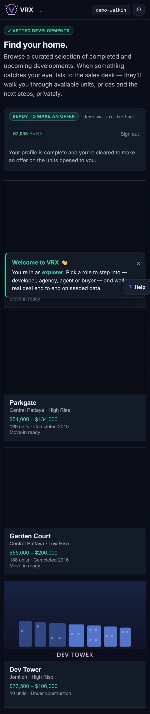
Tapping Miracle Tower opens its page — photos, price range, size, status and amenities. Exact units and prices stay private until the buyer talks to the desk.
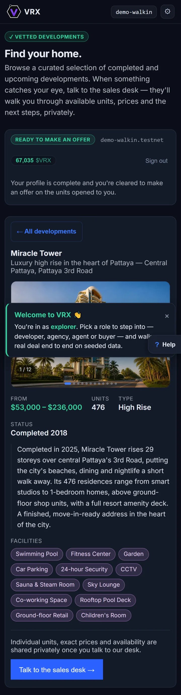
The buyer taps “Talk to the sales desk” and a private chat opens. Everything here is kept off-chain — only the buyer and the desk can see it.
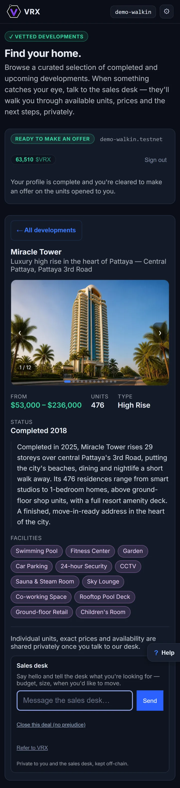
The buyer asks for a 1-bedroom around $70k. The desk (an AI sales assistant working from the real, private catalogue) replies in the thread and pulls matching units.
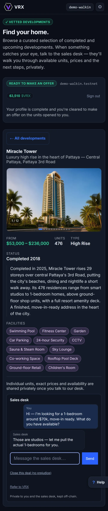
On the developer’s workspace, the enquiry appears under Direct enquiries. The desk vets the buyer, then opens specific units to them — revealing exact specs and price only to that buyer.
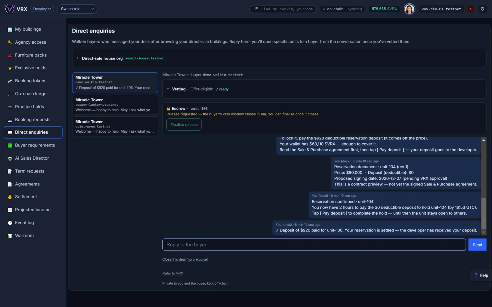
Once the desk opens a unit, it shows on the buyer’s screen under “Units opened to you”, marked “✓ Reserved for you — firm-held on-chain while you proceed.” Next step: pay the deposit.
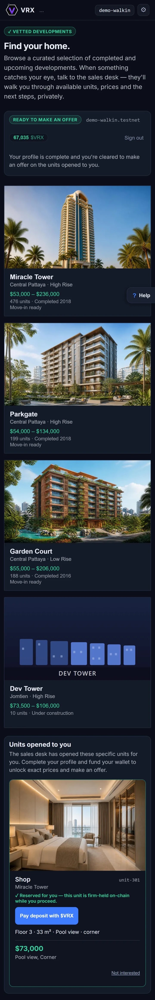
The buyer pays the deductible reservation deposit in $VRX. The money moves straight into VRX escrow — not the developer’s wallet.
The reservation now appears in My purchases with a draft Sale & Purchase agreement, sealed digitally and provisional until the paper contract is signed.
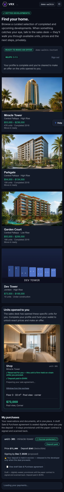
When the deal is proceeding, the developer requests release of the escrowed deposit. This starts the buyer’s protection window. The buyer now has two choices:
If the deal fell through, the buyer vetoes and gets the full deposit refunded.
If the buyer is happy, they waive the window and release the deposit to the developer immediately.
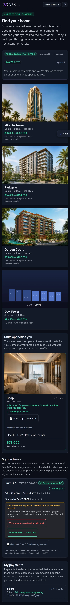
On the desk side, the developer sees 🔒 Escrow for that unit: “Release requested — the buyer’s veto window closes in 9m. You can finalize once it closes.” Neither side can shortcut the other — the money only moves on a legitimate, mutual step.
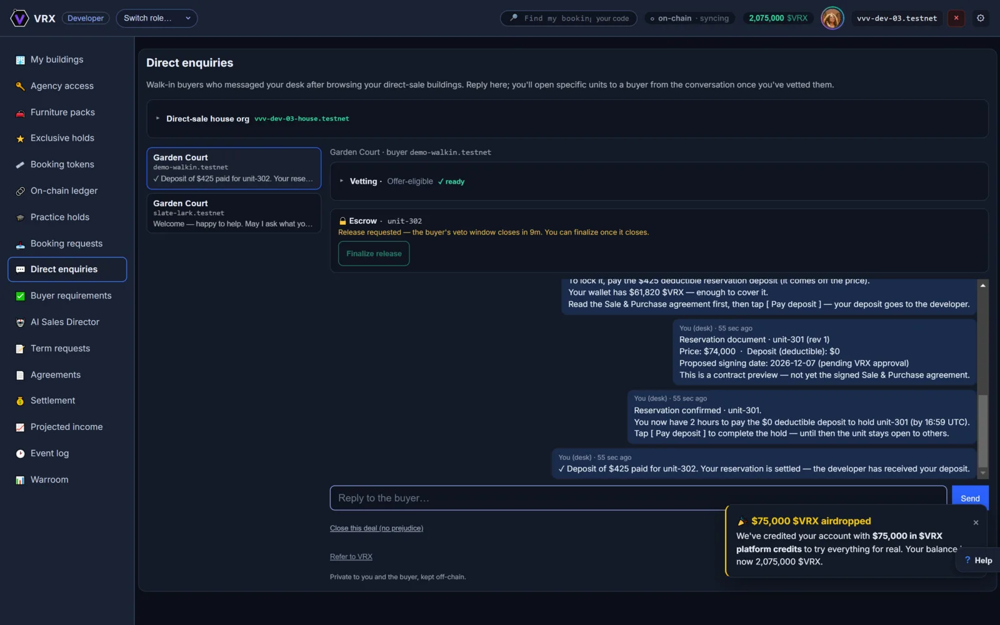
A — Release now (fast close). The buyer waives the window; the deposit is released to the developer. The purchase shows “✓ Your deposit was released to the developer.”
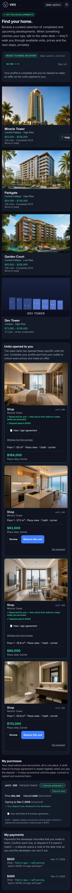
B — Veto (deal fell through). The buyer vetoes; the deposit is refunded in full. The purchase shows “↩ Your escrowed deposit was refunded.” and the balance is restored.
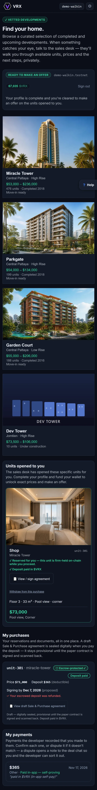